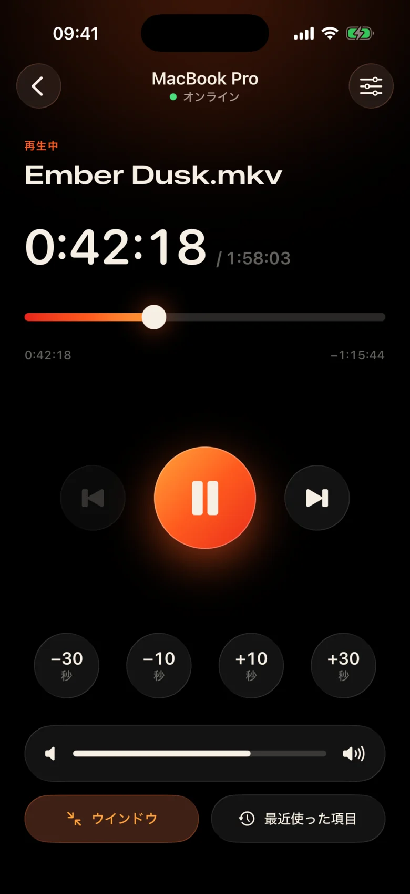
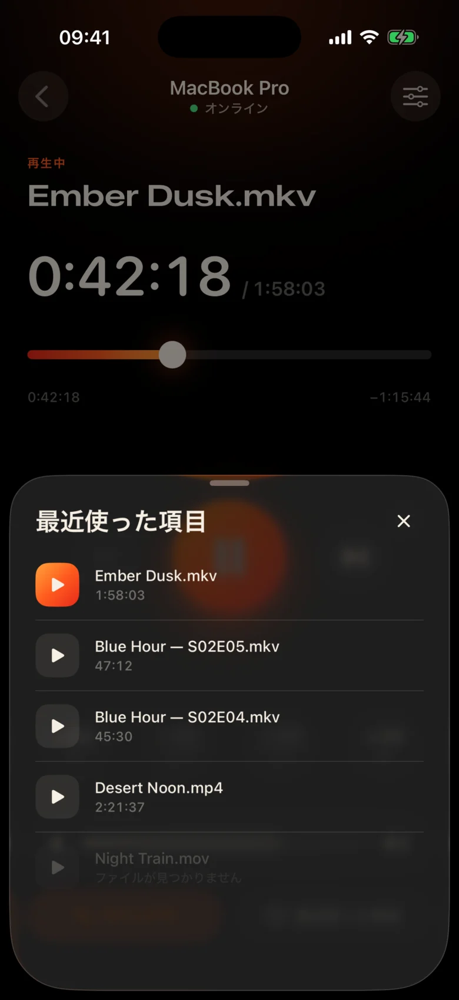
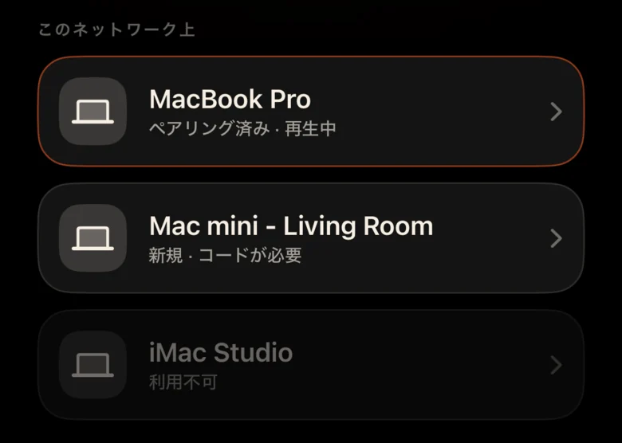
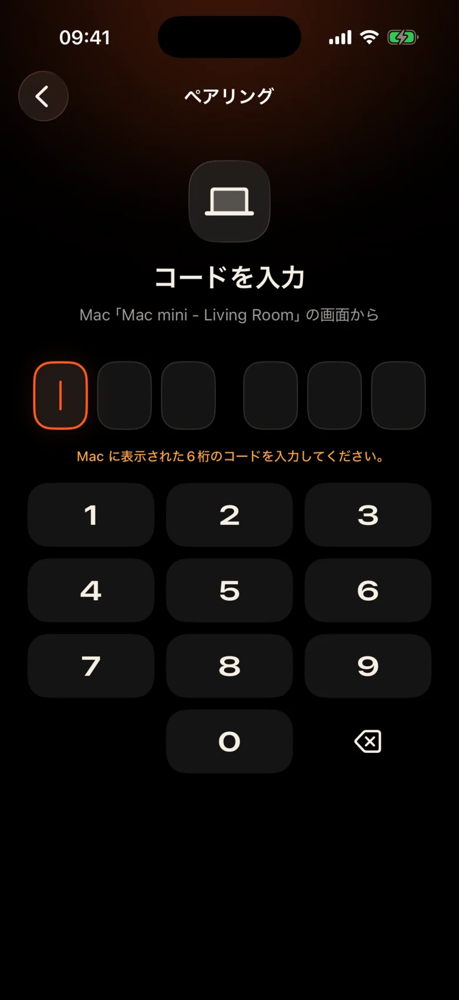

Mac は部屋の向かい側にあります
壁際のプロジェクターに接続されています。一時停止するたびに、立ち上がって、暗闇の中でトラックパッドを見つけ、小さなコントロールバーに目を細める必要があります。
Kinrox: 手に持ったスマートフォンで「一時停止」をタップします。
Kinrox は、Mac であらゆる動画を再生し、iPhone をリモコンに変えます。 MacBook プロジェクターで、あなたはソファで、毛布から出ずに、一時停止したり、10 秒前に戻ったり、音量を下げるか、次のエピソードを開始したりできます。


壁際のプロジェクターに接続されています。一時停止するたびに、立ち上がって、暗闇の中でトラックパッドを見つけ、小さなコントロールバーに目を細める必要があります。
Kinrox: 手に持ったスマートフォンで「一時停止」をタップします。
あるシーンではささやき声が聞こえ、次のシーンでは爆発が起こり、隣の部屋ではすでに誰かが眠っています。
Kinrox: 親指のすぐ下にある音量スライダー。
IP アドレスとパスワードを備えた Web パネル、スリープ状態になるブラウザ タブ、ソファ用ではなく机用に作られたボタン。
Kinrox: Mac を単独で検索し、1 つのコードと組み合わせます。

大きなターゲット、暗く温かみのあるテーマ、そして押すたびに軽くタップされる触覚。フィルムから目を離さずに使用できます。
眠くても押し間違えにくい、大きな操作ボタン。
一行間違えましたか？ワンタップで戻ります。イントロは2つ飛ばして。
Kinrox 自体の音量は 0 から 100 までです。Mac のシステム音量は変更されません。
同じフォルダ内の前後のファイル (Finder の順序)。
以前に視聴したものを選択してください。Mac で開きます。
タイムラインを任意の瞬間にドラッグし、ソファから全画面に切り替えます。
IP アドレスもパスワードもアカウントもありません。最初のコードの後、iPhone は自動的に再接続します。
ファイルを Kinrox にドラッグするか、⌘ O を押します。リモートサーバーはデフォルトでオンになっています。
Kinrox は、両方のデバイスが同じ Wi-Fi に接続されている場合に単独で表示されます。

Mac は、2 分間存続するコードを示しています。 3回間違った試行をすると消えてしまいます。


Alex’s iPhone が Kinrox の操作を要求しています。スマートフォンにこのコードを入力してください。
 コードの有効期限まで 1:47
コードの有効期限まで 1:47
動画はインターフェースです。必要なときに薄いガラスの層が表示され、3 秒後に隠れます。

mpv と IINA の背後にあるエンジンである libmpv に基づいて構築されています。埋め込みまたは外部の音声と字幕を選択します。 VideoToolbox はハードウェア デコードを処理します。
Kinrox フォルダ内の動画を並べて、エピソードが終了すると次の動画を開始します（Finder のように、「10」の前の「2」）。
キーボード ⏯ キー、コントロール センター、再生中のコントロールKinrox。最大 20 個の最近のファイルがスタート画面で待機します。
Mac と iPhone はローカル ネットワーク経由で再生コマンドを直接交換します。動画は Mac に残ります。
Bonjour を超える検出。独自のサブネットからのみ接続します。公衆アドレスと携帯電話は拒否されます。
すべてのコマンドは暗号化されたチャネル内を移動します。ペアリング トークンは両方のデバイスのキーチェーンに存在します。
X25519HKDF-SHA256ChaCha20-Poly1305アカウントや使用状況の分析はありません。 Mac は、一意の識別子やシステム プロファイリングを使用せずに、公開更新フィードを毎日チェックします。この Web サイトには分析や Cookie はありません。
リモコンはタイトルと再生時間を認識しますが、ファイル パスは認識しません。最近のファイルを開くと、Mac で解決されます。
Kinrox は、Swift 6 と libmpv の上の SwiftUI に書き込まれます。プレーヤー、リモコン、プロトコルのすべての行は GitHub にあります。
ソースからビルドする# Xcode 26.5, XcodeGen and mpv from Homebrew
brew install xcodegen mpv pkg-config
git clone https://github.com/awaik/Kinrox.git
cd Kinrox
cp -n Config/Signing.local.xcconfig.example \
Config/Signing.local.xcconfig
# Set your team: docs/runbooks/RUNBOOK-BUILD-AND-SIGNING.md
./Scripts/check-env.sh
./Scripts/generate.sh
xcodebuild -workspace Kinrox.xcworkspace \
-scheme PlayerMac -configuration Debug \
-destination 'platform=macOS,arch=arm64' \
-derivedDataPath DerivedData build
open DerivedData/Build/Products/Debug/Kinrox.appMac と iPhone が Wi‑Fi ネットワークを共有している場合、インターネットにアクセスしなくても再生とリモコンは機能します。 Mac は毎日の更新チェックに HTTPS を使用し、インストールを選択すると更新をダウンロードします。
はい。 Kinrox は、Mac が表示するものなら何でも、プロジェクター、HDMI 経由のテレビ、または AirPlay に接続されたディスプレイで再生されます。
Macs では、macOS 14 Sonoma 以降では Apple silicon、iOS 17 以降では iPhones が使用されます。 Intel Macs はまだサポートされていません。
はい。各iPhone は独自のコードと 1 回ペアリングします。最大 4 台のリモコンを同時に接続できます。プレーヤーの設定でそれらのいずれかを取り消すことができます。
はい。 Mac では、[音声と字幕] ボタン、または [音声] メニューと [字幕] メニューを使用します。埋め込みトラックを選択したり、ネストされたフォルダー内の外部ファイルを検索したり、字幕をオフにしたりできます。 Kinrox は次のエピソードでの選択を覚えておくことができます。
何もありません。 Kinrox は、GNU GPL v3 に基づく無料のオープンソースです。